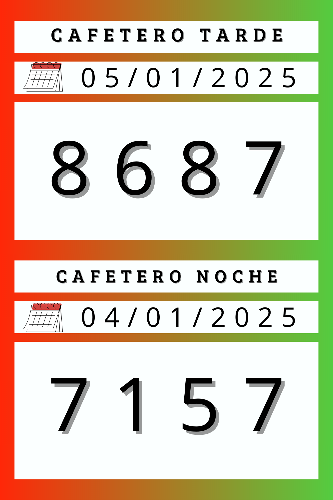

Sorteo Cafetero: Resultados
La Lotería Cafetero de Colombia, te permite ganar grandes premios todas las tardes. Esta lotería se juega diariamente a partir de las 12:00 p.m. y todas las noches a partir de las 10:30 p.m. (hora colombiana).
La dinámica de la Lotería Cafeterito Noche es sencilla. Los participantes deben seleccionar un número de cuatro dígitos entre 0000 y 9999. Posteriormente, tienen la opción de elegir la cantidad que desean apostar. Para obtener un premio, los números elegidos por el jugador deben coincidir exactamente y en el mismo orden que los números ganadores.

Últimos Sorteos
- Cafeterito Noche 5 Enero 2025 8687
- Cafeterito Tarde 4 Enero 2025 7157
- Cafeterito Noche 4 Enero 2025 5196
- Cafeterito Tarde 3 Enero 2025 0220
- Cafeterito Noche 3 Enero 2025 7262
- Cafeterito Tarde 2 Enero 2025 6084
- Cafeterito Noche 2 Enero 2025 8278
- Cafeterito Tarde 31 Diciembre 2024 5184
- Cafeterito Noche 1 Enero 2025 9840
El Cafeterito Noche además de contar con el aval de Apostar Lotería S.A. y el departamento de Risaralda, se ha convertido en un juego emblemático del Eje Cafetero, sobretodo en territorios como Quindío, Caldas y Risaralda.